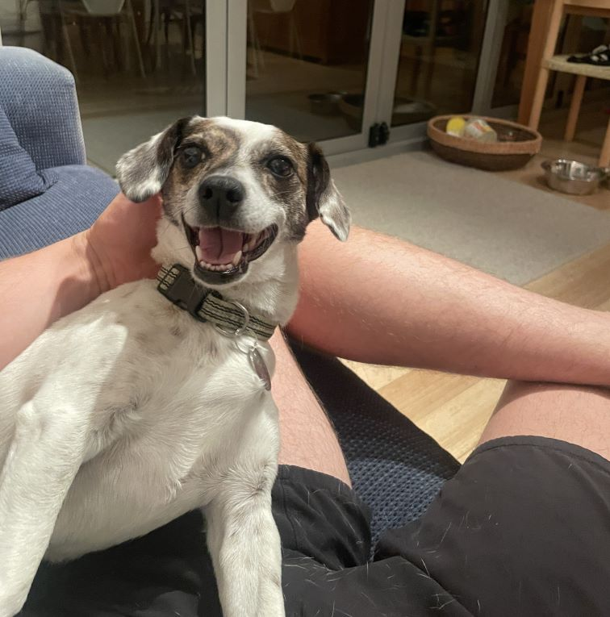
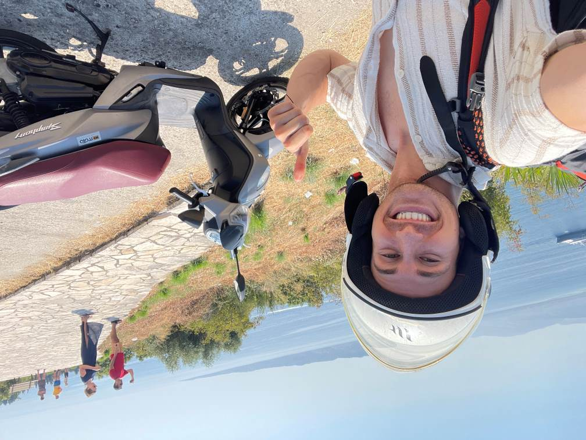

153
Days abroad
Personal
During the year I pivoted into machine learning, I spent five months abroad studying, pet sitting, hiking, getting lost in good ways, and generally stress-testing whether the new path felt real.
Click around the map for the long version. The short version is that it worked, and it also made for better stories than staying home would have.


Sabbatical Map
When I finished banking, I wanted to lock in and study ML to see whether the pivot was conviction or just curiosity.
There were two obvious options: stay home in Wisconsin and study, or do the same work from long-term Airbnbs and pet sits with a little more texture.
One of these paths seemed more fun.
Other Side Quests
Some neat photos from a thwarted John Muir Trail attempt. Wildfires remain undefeated.
A project I started in college to clean up St. Louis parks with a little more structure than "someone should probably do something."
The actual study log behind the sabbatical story. Less romantic, more honest, equally important.
A small dino survived the redesign